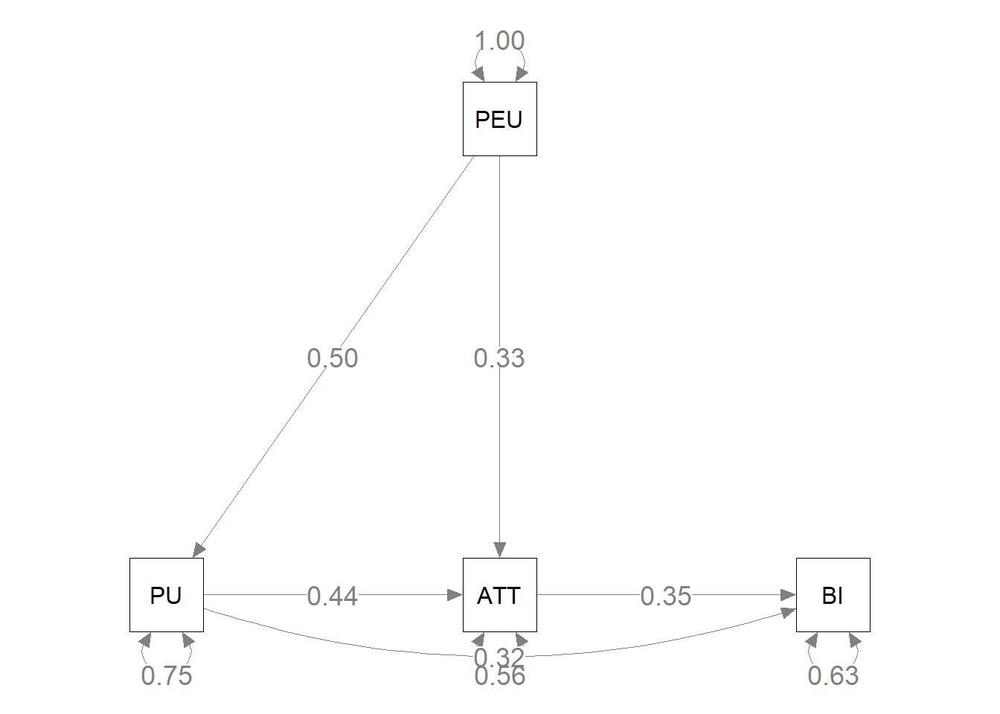

8.3 Stage 2: Structural equation modeling
The pooled correlation matrix is now submitted to SEM.
8.3.1 Model 1: Path model with the direct effect
In the first step, we specify the model using the lavaan language.
# Model specification
Model1 <- " # Structural parameters
BI ~ ATT + PU
ATT ~ PEU + PU
PU ~ PEU
# Variance of independent variables
PEU ~~ 1*PEU
"
# Convert the model into the RAM language
RAM <- lavaan2RAM(Model1,
obs.variables = c("PU", "PEU", "ATT", "BI"))This model is now estimated using the pooled correlation matrix obtained from the stage-1 REM.
# Model estimation
# Confidence intervals are likelihood-ratio based (LBCIs)
TS.Model1 <- tssem2(rem, RAM = RAM,
intervals.type="LB",
diag.constraints = TRUE,
model.name = "Model 1 with the direct effect")
# Summarize the model parameters
summary(TS.Model1)
#>
#> Call:
#> wls(Cov = pooledS, aCov = aCov, n = tssem1.obj$total.n, RAM = RAM,
#> Amatrix = Amatrix, Smatrix = Smatrix, Fmatrix = Fmatrix,
#> diag.constraints = diag.constraints, cor.analysis = cor.analysis,
#> intervals.type = intervals.type, mx.algebras = mx.algebras,
#> model.name = model.name, suppressWarnings = suppressWarnings,
#> silent = silent, run = run)
#>
#> 95% confidence intervals: Likelihood-based statistic
#> Coefficients:
#> Estimate Std.Error lbound ubound z value Pr(>|z|)
#> ATTONPEU 0.31363 NA NA NA NA NA
#> ATTONPU 0.15952 NA NA NA NA NA
#> BIONATT 0.13118 NA NA NA NA NA
#> BIONPU 0.12996 NA NA NA NA NA
#> PUONPEU 0.30617 NA NA 1.34144 NA NA
#> ATTWITHATT 0.10009 NA NA NA NA NA
#> BIWITHBI 0.10009 NA NA NA NA NA
#> PUWITHPU 0.10009 NA NA NA NA NA
#>
#> Goodness-of-fit indices:
#> Value
#> Sample size 14918.0000
#> Chi-square of target model 1564.2532
#> DF of target model 1.0000
#> p value of target model 0.0000
#> Number of constraints imposed on "Smatrix" 3.0000
#> DF manually adjusted 0.0000
#> Chi-square of independence model 3002.8434
#> DF of independence model 6.0000
#> RMSEA 0.3237
#> RMSEA lower 95% CI 0.3104
#> RMSEA upper 95% CI 0.3373
#> SRMR 0.3739
#> TLI -2.1298
#> CFI 0.4784
#> AIC 1562.2532
#> BIC 1554.6428
#> OpenMx status1: 3 ("0" or "1": The optimization is considered fine.
#> Other values indicate problems.)
# Rerun the model to circumvent convergence issues and get all parameters
TS.Model1 <- rerun(TS.Model1)
# Summarize the model parameters
summary(TS.Model1)
#>
#> Call:
#> wls(Cov = pooledS, aCov = aCov, n = tssem1.obj$total.n, RAM = RAM,
#> Amatrix = Amatrix, Smatrix = Smatrix, Fmatrix = Fmatrix,
#> diag.constraints = diag.constraints, cor.analysis = cor.analysis,
#> intervals.type = intervals.type, mx.algebras = mx.algebras,
#> model.name = model.name, suppressWarnings = suppressWarnings,
#> silent = silent, run = run)
#>
#> 95% confidence intervals: Likelihood-based statistic
#> Coefficients:
#> Estimate Std.Error lbound ubound z value Pr(>|z|)
#> ATTONPEU 0.32668 NA 0.26622 0.38448 NA NA
#> ATTONPU 0.43668 NA 0.38553 0.48763 NA NA
#> BIONATT 0.35455 NA 0.26337 0.44480 NA NA
#> BIONPU 0.32253 NA 0.23007 0.41357 NA NA
#> PUONPEU 0.49973 NA 0.45790 0.54145 NA NA
#> ATTWITHATT 0.56001 NA 0.51641 0.60109 NA NA
#> BIWITHBI 0.63306 NA 0.58725 0.67591 NA NA
#> PUWITHPU 0.75027 NA 0.70688 0.79028 NA NA
#>
#> Goodness-of-fit indices:
#> Value
#> Sample size 14918.0000
#> Chi-square of target model 10.0900
#> DF of target model 1.0000
#> p value of target model 0.0015
#> Number of constraints imposed on "Smatrix" 3.0000
#> DF manually adjusted 0.0000
#> Chi-square of independence model 3002.8434
#> DF of independence model 6.0000
#> RMSEA 0.0247
#> RMSEA lower 95% CI 0.0125
#> RMSEA upper 95% CI 0.0395
#> SRMR 0.0285
#> TLI 0.9818
#> CFI 0.9970
#> AIC 8.0900
#> BIC 0.4797
#> OpenMx status1: 0 ("0" or "1": The optimization is considered fine.
#> Other values indicate problems.)
# Plot results
plot(TS.Model1)
# Visualize the model and add its parameters
TS.Model1.plot <- meta2semPlot(TS.Model1)
semPaths(TS.Model1.plot, whatLabels="est",
rotation=2,
edge.label.cex = 1.25,
sizeMan = 8,
color = "grey",
layout = "tree2")
8.3.2 Model 2: Path model without the direct effect
In the first step, we specify the model using the lavaan language.
# Model specification
Model2 <- " # Structural parameters
BI ~ ATT
ATT ~ PEU + PU
PU ~ PEU
# Variance of independent variables
PEU ~~ 1*PEU
"
# Convert the model into the RAM language
RAM2 <- lavaan2RAM(Model2,
obs.variables = c("PU", "PEU", "ATT", "BI"))This model is now estimated using the pooled correlation matrix obtained from the stage-1 REM.
# Model estimation
# Confidence intervals are likelihood-ratio based (LBCIs)
TS.Model2 <- tssem2(rem, RAM = RAM2,
intervals.type="LB",
diag.constraints = TRUE,
model.name = "Model 2 without the direct effect")
# Rerun the model to circumvent convergence issues and get all parameters
TS.Model2 <- rerun(TS.Model2)
# Summarize the model parameters
summary(TS.Model2)
#>
#> Call:
#> wls(Cov = pooledS, aCov = aCov, n = tssem1.obj$total.n, RAM = RAM,
#> Amatrix = Amatrix, Smatrix = Smatrix, Fmatrix = Fmatrix,
#> diag.constraints = diag.constraints, cor.analysis = cor.analysis,
#> intervals.type = intervals.type, mx.algebras = mx.algebras,
#> model.name = model.name, suppressWarnings = suppressWarnings,
#> silent = silent, run = run)
#>
#> 95% confidence intervals: Likelihood-based statistic
#> Coefficients:
#> Estimate Std.Error lbound ubound z value Pr(>|z|)
#> ATTONPEU 0.32656 NA 0.27283 0.37870 NA NA
#> ATTONPU 0.48260 NA 0.43557 0.52893 NA NA
#> BIONATT 0.63443 NA 0.59523 0.67385 NA NA
#> PUONPEU 0.48312 NA 0.44040 0.52585 NA NA
#> ATTWITHATT 0.50818 NA 0.46574 0.54856 NA NA
#> BIWITHBI 0.59750 NA 0.54592 0.64562 NA NA
#> PUWITHPU 0.76660 NA 0.72328 0.80609 NA NA
#>
#> Goodness-of-fit indices:
#> Value
#> Sample size 14918.0000
#> Chi-square of target model 52.1716
#> DF of target model 2.0000
#> p value of target model 0.0000
#> Number of constraints imposed on "Smatrix" 3.0000
#> DF manually adjusted 0.0000
#> Chi-square of independence model 3002.8434
#> DF of independence model 6.0000
#> RMSEA 0.0410
#> RMSEA lower 95% CI 0.0318
#> RMSEA upper 95% CI 0.0510
#> SRMR 0.0711
#> TLI 0.9498
#> CFI 0.9833
#> AIC 48.1716
#> BIC 32.9510
#> OpenMx status1: 0 ("0" or "1": The optimization is considered fine.
#> Other values indicate problems.)
# Visualize the model and add its parameters
TS.Model2.plot <- meta2semPlot(TS.Model2)
semPaths(TS.Model2.plot, whatLabels="est",
rotation=2,
edge.label.cex = 1.25,
sizeMan = 8,
color = "grey",
layout = "tree2")
8.3.3 Model comparison: Model 1 vs. Model 2
# Model comparison
anova(TS.Model1, TS.Model2)
#> base comparison ep minus2LL
#> 1 Model 1 with the direct effect <NA> 8 10.09000
#> 2 Model 1 with the direct effect Model 2 without the direct effect 7 52.17163
#> df AIC diffLL diffdf p
#> 1 -5 26.09000 NA NA NA
#> 2 -4 66.17163 42.08163 1 8.754174e-11The chi-square different test suggest the preference of the model with the direct effect (Model 1) over the model without this effect (Model 2).